<html>
<head>
<style type="text/css">
.resultsTable th {
	text-align: center;
	font-weight: bold
}

.resultsTable td:first-child {
	padding-left: 2;
	text-align: left;
	font-family: monospace;
	font-weight: bold;
}
.resultsTable td:first-child + td {
	padding-left: 2;
	text-align: left;
	font-family: monospace;
	font-weight: bold;
}
.resultsTable td {
	padding-left:20;
	text-align: right;
	font-family: monospace;
}
.resultsTable tr:nth-child(odd) {
	background: #DDD;
}
</style>
</head>

<body>

<a name=monitor>
<pre>
</pre>
No meaningful extraction script for monitor


<table class="resultsTable">
<tr><th colspan="2" >                </th><th colspan="2" >CYCLICKHACKBENCH_XEN_BASELINE</th><th colspan="2" >CYCLICHACKBENCH_XENTRACE</th><th colspan="2" >CYCLICHACKBENCH_XENTRACE_ALL</th></tr>
<tr><th colspan="2" >                </th><th colspan="2" >        host</th><th colspan="2" >        host</th><th colspan="2" >        host</th></tr>
<tr><td >Duration</td><td > User   </td><td >       11.99</td><td ></td><td >       14.07</td><td ></td><td >       19.72</td><td ></td></tr>
<tr><td >Duration</td><td > System </td><td >       13.56</td><td ></td><td >       10.23</td><td ></td><td >        6.01</td><td ></td></tr>
<tr><td >Duration</td><td > Elapsed</td><td >      677.66</td><td ></td><td >      665.13</td><td ></td><td >      669.26</td><td ></td></tr>
</table>

<table class="resultsTable">
<tr><th colspan="2" >                                </th><th colspan="2" >CYCLICKHACKBENCH_XEN_BASELINE</th><th colspan="2" >CYCLICHACKBENCH_XENTRACE</th><th colspan="2" >CYCLICHACKBENCH_XENTRACE_ALL</th></tr>
<tr><th colspan="2" >                                </th><th colspan="2" >           host</th><th colspan="2" >           host</th><th colspan="2" >           host</th></tr>
<tr><td >Ops</td><td > Minor Faults                </td><td >           0.00</td><td ></td><td >           0.00</td><td ></td><td >           0.00</td><td ></td></tr>
<tr><td >Ops</td><td > Major Faults                </td><td >           0.00</td><td ></td><td >           0.00</td><td ></td><td >           0.00</td><td ></td></tr>
<tr><td >Ops</td><td > Swap Ins                    </td><td >           0.00</td><td ></td><td >           0.00</td><td ></td><td >           0.00</td><td ></td></tr>
<tr><td >Ops</td><td > Swap Outs                   </td><td >           0.00</td><td ></td><td >           0.00</td><td ></td><td >           0.00</td><td ></td></tr>
<tr><td >Ops</td><td > Allocation stalls           </td><td >           0.00</td><td ></td><td >           0.00</td><td ></td><td >           0.00</td><td ></td></tr>
<tr><td >Ops</td><td > Fragmentation stalls        </td><td >           0.00</td><td ></td><td >           0.00</td><td ></td><td >           0.00</td><td ></td></tr>
<tr><td >Ops</td><td > DMA allocs                  </td><td >           0.00</td><td ></td><td >           0.00</td><td ></td><td >           0.00</td><td ></td></tr>
<tr><td >Ops</td><td > DMA32 allocs                </td><td >           0.00</td><td ></td><td >           0.00</td><td ></td><td >           0.00</td><td ></td></tr>
<tr><td >Ops</td><td > Normal allocs               </td><td >           0.00</td><td ></td><td >           0.00</td><td ></td><td >           0.00</td><td ></td></tr>
<tr><td >Ops</td><td > Movable allocs              </td><td >           0.00</td><td ></td><td >           0.00</td><td ></td><td >           0.00</td><td ></td></tr>
<tr><td >Ops</td><td > Direct pages scanned        </td><td >           0.00</td><td ></td><td >           0.00</td><td ></td><td >           0.00</td><td ></td></tr>
<tr><td >Ops</td><td > Kswapd pages scanned        </td><td >           0.00</td><td ></td><td >           0.00</td><td ></td><td >           0.00</td><td ></td></tr>
<tr><td >Ops</td><td > Kswapd pages reclaimed      </td><td >           0.00</td><td ></td><td >           0.00</td><td ></td><td >           0.00</td><td ></td></tr>
<tr><td >Ops</td><td > Direct pages reclaimed      </td><td >           0.00</td><td ></td><td >           0.00</td><td ></td><td >           0.00</td><td ></td></tr>
<tr><td >Ops</td><td > Kswapd efficiency %         </td><td >         100.00</td><td ></td><td >         100.00</td><td ></td><td >         100.00</td><td ></td></tr>
<tr><td >Ops</td><td > Kswapd velocity             </td><td >           0.00</td><td ></td><td >           0.00</td><td ></td><td >           0.00</td><td ></td></tr>
<tr><td >Ops</td><td > Direct efficiency %         </td><td >         100.00</td><td ></td><td >         100.00</td><td ></td><td >         100.00</td><td ></td></tr>
<tr><td >Ops</td><td > Direct velocity             </td><td >           0.00</td><td ></td><td >           0.00</td><td ></td><td >           0.00</td><td ></td></tr>
<tr><td >Ops</td><td > Percentage direct scans     </td><td >           0.00</td><td ></td><td >           0.00</td><td ></td><td >           0.00</td><td ></td></tr>
<tr><td >Ops</td><td > Page writes by reclaim      </td><td >           0.00</td><td ></td><td >           0.00</td><td ></td><td >           0.00</td><td ></td></tr>
<tr><td >Ops</td><td > Page writes file            </td><td >           0.00</td><td ></td><td >           0.00</td><td ></td><td >           0.00</td><td ></td></tr>
<tr><td >Ops</td><td > Page writes anon            </td><td >           0.00</td><td ></td><td >           0.00</td><td ></td><td >           0.00</td><td ></td></tr>
<tr><td >Ops</td><td > Page reclaim immediate      </td><td >           0.00</td><td ></td><td >           0.00</td><td ></td><td >           0.00</td><td ></td></tr>
<tr><td >Ops</td><td > Sector Reads                </td><td >           0.00</td><td ></td><td >           0.00</td><td ></td><td >           0.00</td><td ></td></tr>
<tr><td >Ops</td><td > Sector Writes               </td><td >           0.00</td><td ></td><td >           0.00</td><td ></td><td >           0.00</td><td ></td></tr>
<tr><td >Ops</td><td > Page rescued immediate      </td><td >           0.00</td><td ></td><td >           0.00</td><td ></td><td >           0.00</td><td ></td></tr>
<tr><td >Ops</td><td > Slabs scanned               </td><td >           0.00</td><td ></td><td >           0.00</td><td ></td><td >           0.00</td><td ></td></tr>
<tr><td >Ops</td><td > Direct inode steals         </td><td >           0.00</td><td ></td><td >           0.00</td><td ></td><td >           0.00</td><td ></td></tr>
<tr><td >Ops</td><td > Kswapd inode steals         </td><td >           0.00</td><td ></td><td >           0.00</td><td ></td><td >           0.00</td><td ></td></tr>
<tr><td >Ops</td><td > Kswapd skipped wait         </td><td >           0.00</td><td ></td><td >           0.00</td><td ></td><td >           0.00</td><td ></td></tr>
<tr><td >Ops</td><td > THP fault alloc             </td><td >           0.00</td><td ></td><td >           0.00</td><td ></td><td >           0.00</td><td ></td></tr>
<tr><td >Ops</td><td > THP fault fallback          </td><td >           0.00</td><td ></td><td >           0.00</td><td ></td><td >           0.00</td><td ></td></tr>
<tr><td >Ops</td><td > THP collapse alloc          </td><td >           0.00</td><td ></td><td >           0.00</td><td ></td><td >           0.00</td><td ></td></tr>
<tr><td >Ops</td><td > THP collapse fail           </td><td >           0.00</td><td ></td><td >           0.00</td><td ></td><td >           0.00</td><td ></td></tr>
<tr><td >Ops</td><td > THP split                   </td><td >           0.00</td><td ></td><td >           0.00</td><td ></td><td >           0.00</td><td ></td></tr>
<tr><td >Ops</td><td > THP split failed            </td><td >           0.00</td><td ></td><td >           0.00</td><td ></td><td >           0.00</td><td ></td></tr>
<tr><td >Ops</td><td > Compaction stalls           </td><td >           0.00</td><td ></td><td >           0.00</td><td ></td><td >           0.00</td><td ></td></tr>
<tr><td >Ops</td><td > Compaction success          </td><td >           0.00</td><td ></td><td >           0.00</td><td ></td><td >           0.00</td><td ></td></tr>
<tr><td >Ops</td><td > Compaction failures         </td><td >           0.00</td><td ></td><td >           0.00</td><td ></td><td >           0.00</td><td ></td></tr>
<tr><td >Ops</td><td > Compaction efficiency       </td><td >           0.00</td><td ></td><td >           0.00</td><td ></td><td >           0.00</td><td ></td></tr>
<tr><td >Ops</td><td > Page migrate success        </td><td >           0.00</td><td ></td><td >           0.00</td><td ></td><td >           0.00</td><td ></td></tr>
<tr><td >Ops</td><td > Page migrate failure        </td><td >           0.00</td><td ></td><td >           0.00</td><td ></td><td >           0.00</td><td ></td></tr>
<tr><td >Ops</td><td > Compaction pages isolated   </td><td >           0.00</td><td ></td><td >           0.00</td><td ></td><td >           0.00</td><td ></td></tr>
<tr><td >Ops</td><td > Compaction migrate scanned  </td><td >           0.00</td><td ></td><td >           0.00</td><td ></td><td >           0.00</td><td ></td></tr>
<tr><td >Ops</td><td > Compaction free scanned     </td><td >           0.00</td><td ></td><td >           0.00</td><td ></td><td >           0.00</td><td ></td></tr>
<tr><td >Ops</td><td > Compact scan efficiency     </td><td >           0.00</td><td ></td><td >           0.00</td><td ></td><td >           0.00</td><td ></td></tr>
<tr><td >Ops</td><td > Compaction cost             </td><td >          -0.00</td><td ></td><td >          -0.00</td><td ></td><td >          -0.00</td><td ></td></tr>
<tr><td >Ops</td><td > Kcompactd wake              </td><td >           0.00</td><td ></td><td >           0.00</td><td ></td><td >           0.00</td><td ></td></tr>
<tr><td >Ops</td><td > Kcompactd migrate scanned   </td><td >           0.00</td><td ></td><td >           0.00</td><td ></td><td >           0.00</td><td ></td></tr>
<tr><td >Ops</td><td > Kcompactd free scanned      </td><td >           0.00</td><td ></td><td >           0.00</td><td ></td><td >           0.00</td><td ></td></tr>
<tr><td >Ops</td><td > NUMA alloc hit              </td><td >           0.00</td><td ></td><td >           0.00</td><td ></td><td >           0.00</td><td ></td></tr>
<tr><td >Ops</td><td > NUMA alloc miss             </td><td >           0.00</td><td ></td><td >           0.00</td><td ></td><td >           0.00</td><td ></td></tr>
<tr><td >Ops</td><td > NUMA interleave hit         </td><td >           0.00</td><td ></td><td >           0.00</td><td ></td><td >           0.00</td><td ></td></tr>
<tr><td >Ops</td><td > NUMA alloc local            </td><td >           0.00</td><td ></td><td >           0.00</td><td ></td><td >           0.00</td><td ></td></tr>
<tr><td >Ops</td><td > NUMA base-page range updates</td><td >           0.00</td><td ></td><td >           0.00</td><td ></td><td >           0.00</td><td ></td></tr>
<tr><td >Ops</td><td > NUMA PTE updates            </td><td >           0.00</td><td ></td><td >           0.00</td><td ></td><td >           0.00</td><td ></td></tr>
<tr><td >Ops</td><td > NUMA PMD updates            </td><td >           0.00</td><td ></td><td >           0.00</td><td ></td><td >           0.00</td><td ></td></tr>
<tr><td >Ops</td><td > NUMA hint faults            </td><td >           0.00</td><td ></td><td >           0.00</td><td ></td><td >           0.00</td><td ></td></tr>
<tr><td >Ops</td><td > NUMA hint local faults %    </td><td >           0.00</td><td ></td><td >           0.00</td><td ></td><td >           0.00</td><td ></td></tr>
<tr><td >Ops</td><td > NUMA hint local percent     </td><td >         100.00</td><td ></td><td >         100.00</td><td ></td><td >         100.00</td><td ></td></tr>
<tr><td >Ops</td><td > NUMA pages migrated         </td><td >           0.00</td><td ></td><td >           0.00</td><td ></td><td >           0.00</td><td ></td></tr>
<tr><td >Ops</td><td > AutoNUMA cost               </td><td >           0.00</td><td ></td><td >           0.00</td><td ></td><td >           0.00</td><td ></td></tr>
</table>

<table class="resultsTable">
<tr><th colspan="2" >                           </th><th colspan="2" >CYCLICKHACKBENCH_XEN_BASELINE</th><th colspan="2" >CYCLICHACKBENCH_XENTRACE</th><th colspan="2" >CYCLICHACKBENCH_XENTRACE_ALL</th></tr>
<tr><th colspan="2" >                           </th><th colspan="2" >           host</th><th colspan="2" >           host</th><th colspan="2" >           host</th></tr>
<tr><td >Ops</td><td > TTWU Count             </td><td >           0.00</td><td ></td><td >           0.00</td><td ></td><td >           0.00</td><td ></td></tr>
<tr><td >Ops</td><td > TTWU Local             </td><td >           0.00</td><td ></td><td >           0.00</td><td ></td><td >           0.00</td><td ></td></tr>
<tr><td >Ops</td><td > SIS Search             </td><td >           0.00</td><td ></td><td >           0.00</td><td ></td><td >           0.00</td><td ></td></tr>
<tr><td >Ops</td><td > SIS Domain Search      </td><td >           0.00</td><td ></td><td >           0.00</td><td ></td><td >           0.00</td><td ></td></tr>
<tr><td >Ops</td><td > SIS Scanned            </td><td >           0.00</td><td ></td><td >           0.00</td><td ></td><td >           0.00</td><td ></td></tr>
<tr><td >Ops</td><td > SIS Domain Scanned     </td><td >           0.00</td><td ></td><td >           0.00</td><td ></td><td >           0.00</td><td ></td></tr>
<tr><td >Ops</td><td > SIS Failures           </td><td >           0.00</td><td ></td><td >           0.00</td><td ></td><td >           0.00</td><td ></td></tr>
<tr><td >Ops</td><td > SIS Core Search        </td><td >           0.00</td><td ></td><td >           0.00</td><td ></td><td >           0.00</td><td ></td></tr>
<tr><td >Ops</td><td > SIS Core Hit           </td><td >           0.00</td><td ></td><td >           0.00</td><td ></td><td >           0.00</td><td ></td></tr>
<tr><td >Ops</td><td > SIS Core Miss          </td><td >           0.00</td><td ></td><td >           0.00</td><td ></td><td >           0.00</td><td ></td></tr>
<tr><td >Ops</td><td > SIS Recent Used Hit    </td><td >           0.00</td><td ></td><td >           0.00</td><td ></td><td >           0.00</td><td ></td></tr>
<tr><td >Ops</td><td > SIS Recent Used Miss   </td><td >           0.00</td><td ></td><td >           0.00</td><td ></td><td >           0.00</td><td ></td></tr>
<tr><td >Ops</td><td > SIS Recent Attempts    </td><td >           0.00</td><td ></td><td >           0.00</td><td ></td><td >           0.00</td><td ></td></tr>
<tr><td >Ops</td><td > SIS Search Efficiency  </td><td >         100.00</td><td ></td><td >         100.00</td><td ></td><td >         100.00</td><td ></td></tr>
<tr><td >Ops</td><td > SIS Domain Search Eff  </td><td >         100.00</td><td ></td><td >         100.00</td><td ></td><td >         100.00</td><td ></td></tr>
<tr><td >Ops</td><td > SIS Fast Success Rate  </td><td >         100.00</td><td ></td><td >         100.00</td><td ></td><td >         100.00</td><td ></td></tr>
<tr><td >Ops</td><td > SIS Success Rate       </td><td >         100.00</td><td ></td><td >         100.00</td><td ></td><td >         100.00</td><td ></td></tr>
<tr><td >Ops</td><td > SIS Recent Success Rate</td><td >           0.00</td><td ></td><td >           0.00</td><td ></td><td >           0.00</td><td ></td></tr>
</table>

<table class="resultsTable">
<tr><th colspan="2" >                         </th><th colspan="2" >CYCLICKHACKBENCH_XEN_BASELINE</th><th colspan="2" >CYCLICHACKBENCH_XENTRACE</th><th colspan="2" >CYCLICHACKBENCH_XENTRACE_ALL</th></tr>
<tr><th colspan="2" >                         </th><th colspan="2" >        host</th><th colspan="2" >        host</th><th colspan="2" >        host</th></tr>
<tr><td >Amean</td><td > sda-avgqusz</td><td >        4.69</td><td ></td><td >       84.21</td><td ></td><td >       81.43</td><td ></td></tr>
<tr><td >Amean</td><td > sda-await  </td><td >      989.69</td><td ></td><td >     8929.43</td><td ></td><td >     9693.21</td><td ></td></tr>
<tr><td >Amean</td><td > sda-r_await</td><td >     1973.81</td><td ></td><td >    14665.32</td><td ></td><td >    15911.07</td><td ></td></tr>
<tr><td >Amean</td><td > sda-w_await</td><td >        5.57</td><td ></td><td >     3193.53</td><td ></td><td >     3475.34</td><td ></td></tr>
<tr><td >Amean</td><td > sda-svctm  </td><td >        0.00</td><td ></td><td >        0.00</td><td ></td><td >        0.00</td><td ></td></tr>
<tr><td >Hmean</td><td > sda-avgrqsz</td><td >       10.06</td><td ></td><td >       36.64</td><td ></td><td >       33.85</td><td ></td></tr>
<tr><td >Hmean</td><td > sda-rrqm   </td><td >        0.00</td><td ></td><td >        0.00</td><td ></td><td >        0.00</td><td ></td></tr>
<tr><td >Hmean</td><td > sda-wrqm   </td><td >        0.00</td><td ></td><td >        0.00</td><td ></td><td >        0.00</td><td ></td></tr>
<tr><td >Max  </td><td > sda-avgqusz</td><td >       80.00</td><td ></td><td >       99.00</td><td ></td><td >       99.00</td><td ></td></tr>
<tr><td >Max  </td><td > sda-await  </td><td >    26392.50</td><td ></td><td >    36786.50</td><td ></td><td >    43241.50</td><td ></td></tr>
<tr><td >Max  </td><td > sda-r_await</td><td >    52784.00</td><td ></td><td >    65260.00</td><td ></td><td >    71908.00</td><td ></td></tr>
<tr><td >Max  </td><td > sda-w_await</td><td >       85.00</td><td ></td><td >    13760.00</td><td ></td><td >    17163.00</td><td ></td></tr>
<tr><td >Max  </td><td > sda-svctm  </td><td >        0.00</td><td ></td><td >        0.00</td><td ></td><td >        0.00</td><td ></td></tr>
<tr><td >Max  </td><td > sda-avgrqsz</td><td >      505.00</td><td ></td><td >      645.00</td><td ></td><td >      521.00</td><td ></td></tr>
<tr><td >Max  </td><td > sda-rrqm   </td><td >       65.00</td><td ></td><td >       87.00</td><td ></td><td >       94.00</td><td ></td></tr>
<tr><td >Max  </td><td > sda-wrqm   </td><td >       90.00</td><td ></td><td >      125.00</td><td ></td><td >      131.00</td><td ></td></tr>
</table>
<table class="resultsGraphs">
</table>
<table class="monitorGraphs">
<tr>
  <td>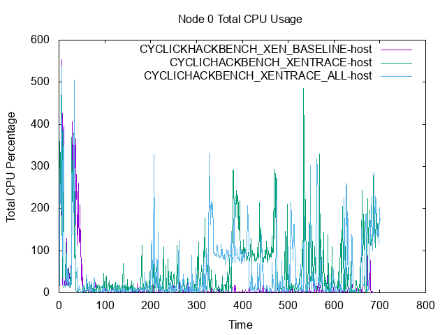</td></tr>
<tr>
  <td>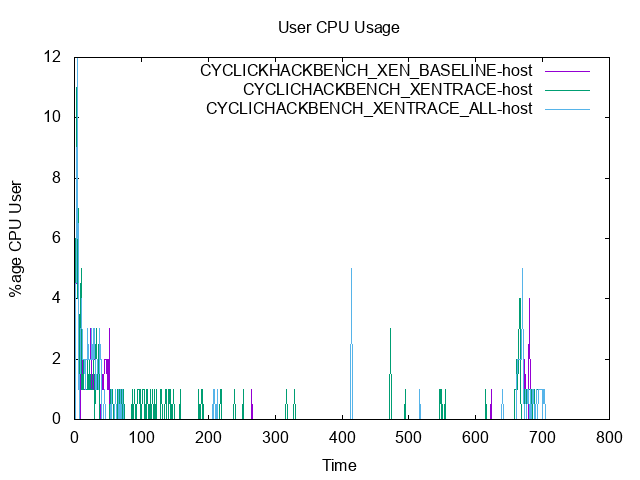</td>  <td>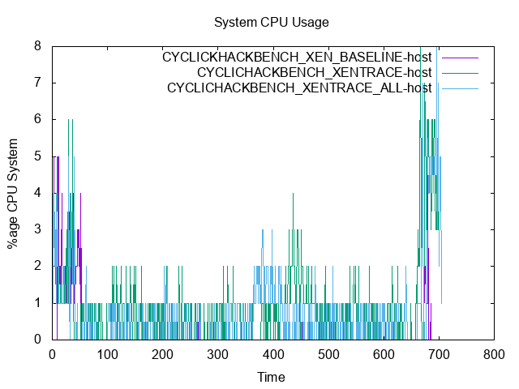</td>  <td>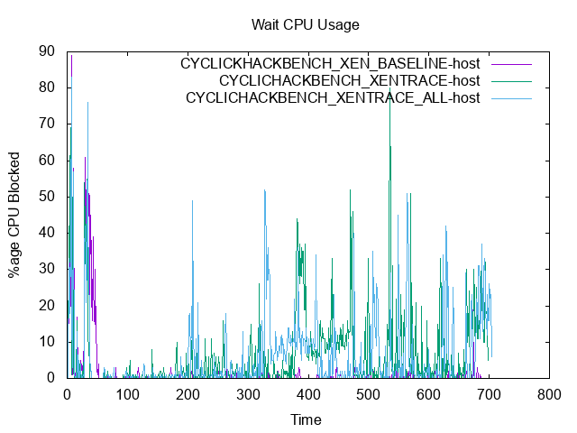</td></tr>
<tr>
  <td>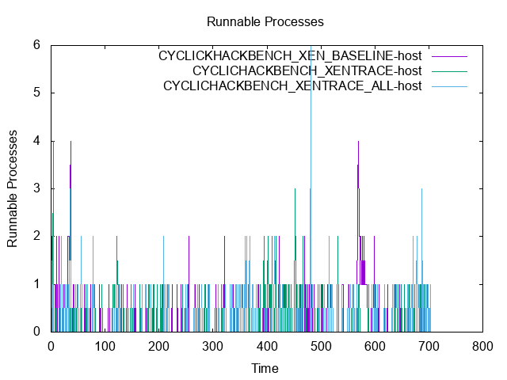</td>  <td>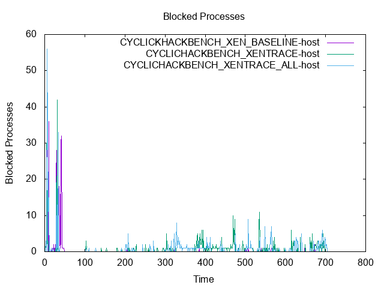</td>  <td>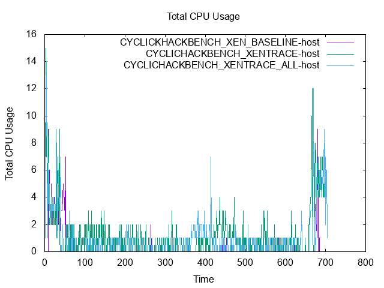</td></tr>
<tr>
  <td>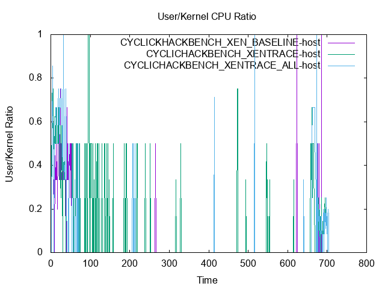</td></tr>
<tr>
  <td>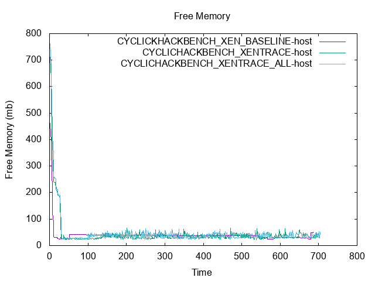</td>  <td>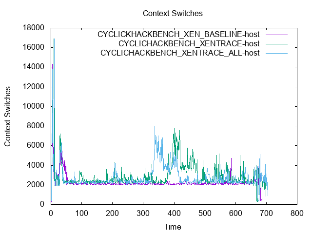</td>  <td>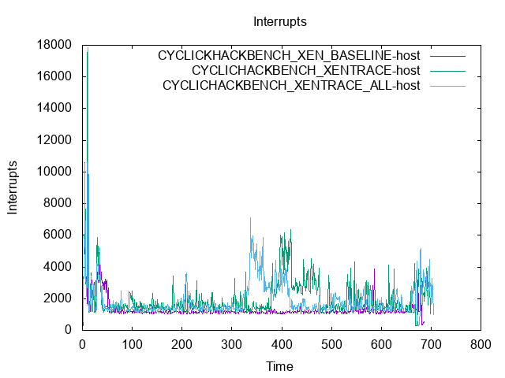</td></tr>
</table>
<table>
<tr>
  <td>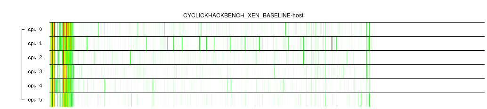</td>  <td>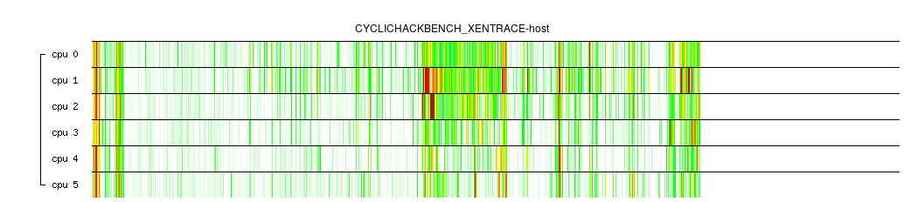</td>  <td>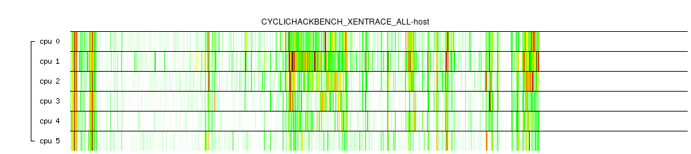</td></tr>
<tr>
  <td></td>  <td></td>  <td></td></tr>
</table>
</body>
</html>
